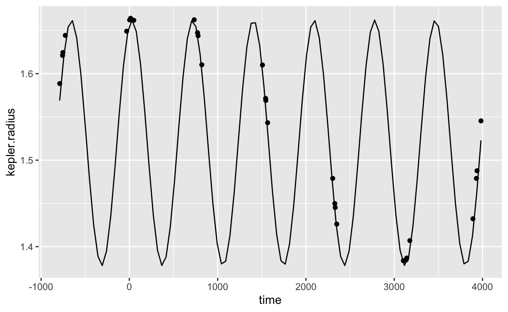

| ID: | Password: | |||
|
|
Welcome to the Math 141Z tutorials on using R for calculus.
These computing tutorials replace the “Working in RStudio” sections in the Kilty and McAllister Mathematical Modeling and Applied Calculus textbook. You can ignore those sections.
Each computing tutorial will have a layout similar to this document. For most browser setups, there are two columns in a tutorial. The left column gives the document title and a navigable table of contents. (If your browser window is very small, the table of contents will become a drop-down menu rooted in the title of the tutorial.)
The right column shows one page of the tutorial. There are typically several pages in a computing tutorial.
Every page in the tutorial has a login section. You are to use the computing ID [IN DRAFT: We need to establish the system for this.] and password that have been provided to you. When you see the “Login SUCCESSFUL” message, you are ready to go.
The login section appears at the top of every page so that you can confirm that you are correctly logged in or fix the situation if you are not.
The content of the page is displayed after the login section. Some pages, like this one, will consist only of text narrative. Other pages will have a mix of material, as you will see.
The page ends with one or more buttons to move to the next or previous page. You could do the same thing using the table of contents.
Many pages will contain explanatory material and notes. Not surprisingly, some of this material will consist of illustrative computer commands and the output generated by them. For the sake of acquainting you with the format of such illustrative commands, here is an example. For the moment, don’t worry about understanding the content of the command.
gf_point(kepler.radius ~ time, data = Kepler) %>%
slice_plot(1.52 + 0.142 * sin(2 * pi * time/687 - 300.3) ~ time)
The computer command appears in a grey box. The output from the command (if any) appears below. (The graph shows the distance of Mars from the Sun based on observations by Tycho Brahe (1546-1601) and analyzed by Johannes Kepler (1571-1630).)
The tutorials include facilities for you to write your own computer commands and evaluate them. This is done in “code boxes” such as the one below.
sqrt(47)Often the code boxes will be pre-populated with text that you will edit in order to customize for some purpose. You press “Run code” to evaluate the code in the box.
Sometimes there will be a “Submit” button on the code box. You can work with the box to get the answer you want, testing as you go by pressing “Run code.” Then, when you think you have worked out the right answer, press “Submit.”
There’s a mistake in the code box below. Fix it in order to calculate \(\sqrt{477}\) and then submit your answer.
sqt(47)gradethis::grade_result(
pass_if( ~ .result == sqrt(477)),
fail_if( ~ .result == sqrt(47), message = "We asked for the square root of 477. You need to do some more editing."),
fail_if( ~ TRUE, message = "Keep trying!")
)Tutorials may also include multiple-choice questions. Here’s a silly example. To see how things work, give an incorrect answer and then a correct one.
When you are logged in to the document, all your answers will be saved to the 141Z instructors’ database. This applies as well to the code when you press “Submit” in a code box.
If you are working on an assignment and think better of an answer that has already been submitted, just submit the new answer again.
Underneath the table of contents is a small button labeled “Start over.” This will erase the display of your previous answers in case you want to start over from a blank document, for instance to quiz yourself if you are studying for an exam.
Answers that you previously submitted by being logged in will not be erased. So you’re safe.